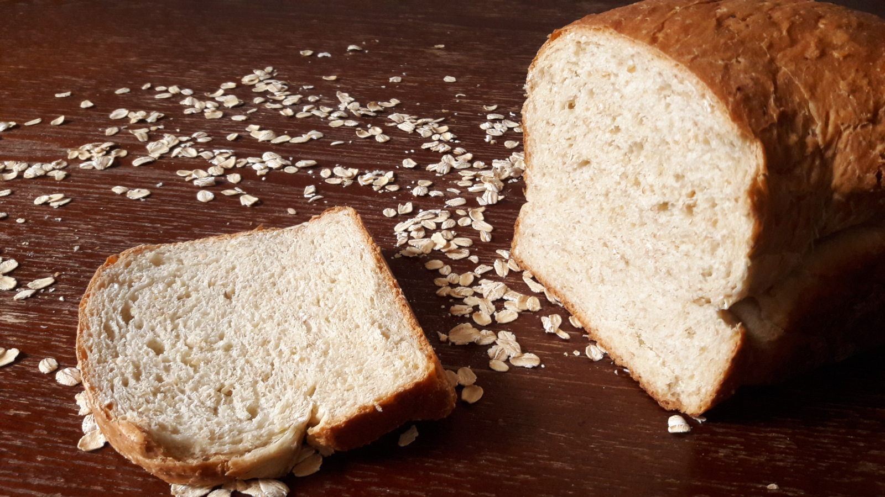

Pan de Avena
- Preparación: 15 min
- Tiempo de levado: 1-2 h
- Horneado: 30-35 min
- Porciones: 2 hogazas
INGREDIENTES
- 2 tazas (170 g) de copos de avena
- 1 taza (120 g) de harina de avena ó de copos de avena molidos
- 5 cucharaditas (15 g) de levadura seca
- 2½ (15 g) cucharaditas de sal
- 5 tazas (700 g) de harina de trigo de todo uso ó para pan
- 2 tazas (500 g) de agua tibia
- ⅔ (170 g) de taza de leche tibia
- ½ (120 g) taza de aceite vegetal
- 4 cucharadas (60 g) de azúcar moreno
- 4 cucharadas (87 g) de miel
DESCRIPCIÓN
Este delicioso pan amielado es el compañero perfecto para desayunos dulces, sándwiches, o para comerse solo. Tiene una miga bien hidratada y rugosa debido a la avena. A pesar de ser ligeramente dulce queda perfecto para combinar con platos salados. Un gran favorito para toda ocasión, que además tiene un alto contenido proteínico.
INSTRUCCIONES
- En un recipiente profundo mezclar los copos de avena tradicional, la harina de avena (ver Notas), levadura, sal y harina de trigo hasta obtener una mezcla uniforme.
- En un recipiente mediano mezclar el agua, leche, aceite, azúcar y miel. La temperatura aproximada de la mezcla, para que la levadura se active correctamente deberá ser de 38-43 °C (100-110 °F). Verter esta mezcla a los ingredientes secos hasta obtener una masa ligeramente pegajosa. Transferir a una superficie enharinada y amasar por aproximadamente 10 minutos ó hasta que la masa quede suave y elástica. Si la masa está demasiado pegajosa agregar más harina en pequeñas cantidades, y si por el contrario, la masa está demasiado seca, agregar un poco de agua.
- Colocar la masa en un recipiente grande ligeramente aceitado, cubrirla con plástico y dejarla levar aproximadamente una hora hasta que la masa se vea bastante hinchada, aunque no llegue a duplicar su tamaño.
- Pasado este tiempo, deshinchar la masa suavemente y transferirla a una superficie enharinada. Dar forma a la masa para hornearla en dos moldes de pan.
- Colocar la masa en moldes de pan de aproximadamente 28x13x7 cm (9.25x5.25x2.75 in). Cubrir nuevamente con plástico y dejarla levar otros 45-60 minutos. Hacia el fin del levado precalentar el horno a 175 °C (350 °F).
- Hornear las hogazas entre 35-40 minutos. Es probable que la corteza comience a oscurecerse muy pronto. En este caso, colocar papel de aluminio sobre el pan y continuar horneando. El pan estará listo cuando al golpearlo por la parte de la base con el puño cerrado se escuche como hueco, o cuando la temperatura interior medida con termómetro de cocina sea de 85-87 °C (190 °F).
- Desmoldar y dejar enfriar totalmente sobre una rejilla antes de servir.
Notas
- No hace falta comprar harina de avena, que además de ser difícil de conseguir puede llegar a ser muy cara. Se pueden moler fácilmente los copos de avena tradicionales en licuadora ó en procesador de alimentos. Una ventaja de éste método es que podemos moler la avena de acuerdo a nuestro gusto. Personalmente me gusta que la harina no sea fina, sino que tenga algunas partículas mas gruesas.